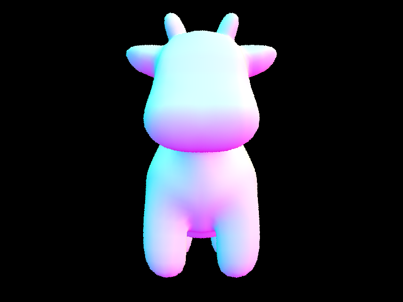

CS184/284A Spring 2025 Homework 3 Write-Up
Link to webpage: (TODO) cs184.eecs.berkeley.edu/sp25 Link to GitHub repository: (TODO) cs184.eecs.berkeley.edu/sp25

Overview
Give a high-level overview of what you implemented in this homework. Think about what you've built as a whole. Share your thoughts on what interesting things you've learned from completing the homework.Part 1: Ray Generation and Scene Intersection
For generate_ray, I converted the coordinates into camera space by normalizing them to [-1,1] and transforming them to camera space by multiplying them by tan(viewing angle / 2). I can then transform my vector into world space by multiplying it with c2w. A ray is then composed of this transformed vector and the world origin.
In raytrace_pixel I generate num_sample samples using get_sample(). I then generate a ray by offsetting the pixel coords with my sample coords and normalizing.
To find if a ray intersects a triangle, I first check where the ray intersects the triangle's plane using the Moller Trumbore Algorithm. I solve for barycentric coordinates with the determinant I derived through the cross product of the ray direction vector and the triangle edge. If this determinant is close to zero this means that the ray is parallel to the triangle. Using intermediate vectors p, q, and t we can find the barycentric coordinates of the triangle, giving us a decision if there is a valid hit and t-value (distance).

|

|

|
Part 2: Bounding Volume Hierarchy
I constructed the BVH by splitting on the longest axis of the bounding box using partition. If the split created a node with no members I simply arbitrarily split the primitives in half. I continued this recursive logic until all nodes were smaller than the maximum leaf size.
Part 3: Direct Illumination
The first implementation is the estimate_direct_lighitng_hemispheres. This implementation samples a random direction using sample_f that comes from somewhere on the hemisphere. We convert this sampled local direction into world-space and create a ray that starts from our point and goes in the random direction. If it hits a light source, we get an emission value back which we can use to solve for our point's brightness with the Monte Carlo estimator. We do this a number of times and output the average.
The second implementation is importance sampling. This time we iterate through all the light sources and trace rays to our point. We check if this light source is not blocked by an object and add the contribution via the Monte Carlo estimator.